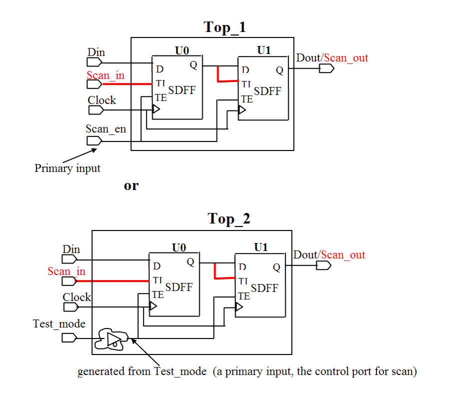

| Description | All flip-flop scan enable pins must be controllable from the boundary of the chip or through some controllable logic. Flip-flops with uncontrollable scan enable pins are removed from the scan path, thus reducing test coverage. |
| Policy | DESIGN |
| Ruleset | DFT |
| Language | VHDL/Verilog |
| Type | Hardware |
| Severity | Error |
This is an example of invalid Verilog code, followed by a circuit diagram that illustrates the problem and the solution:
module ntl_dft55_top(Clock, Test_Mode, Mbist_Test_Mode, Din, Dout); input Test_Mode; // a primary input, it is used for scan-mode test input Mbist_Test_Mode; // a control signal for MBIST test ... wire net_int; //interior signal ... //Scan DFF -- SDFF SDFF U0(.D(Din), .CP(Clock), .TI(Din), .TE(Test_Mode), .Q(net_01)); // OK -- scan-enable signal (Top.U0.TE) is from the primary input SDFF U1(.D(net_02), .CP(Clock), .TI(net_01), .TE(net_int), .Q(Dout)); // NTL_DFT55 fires -- scan-enable signal (Top.U1.TE) is not // directly from the primary input endmodule